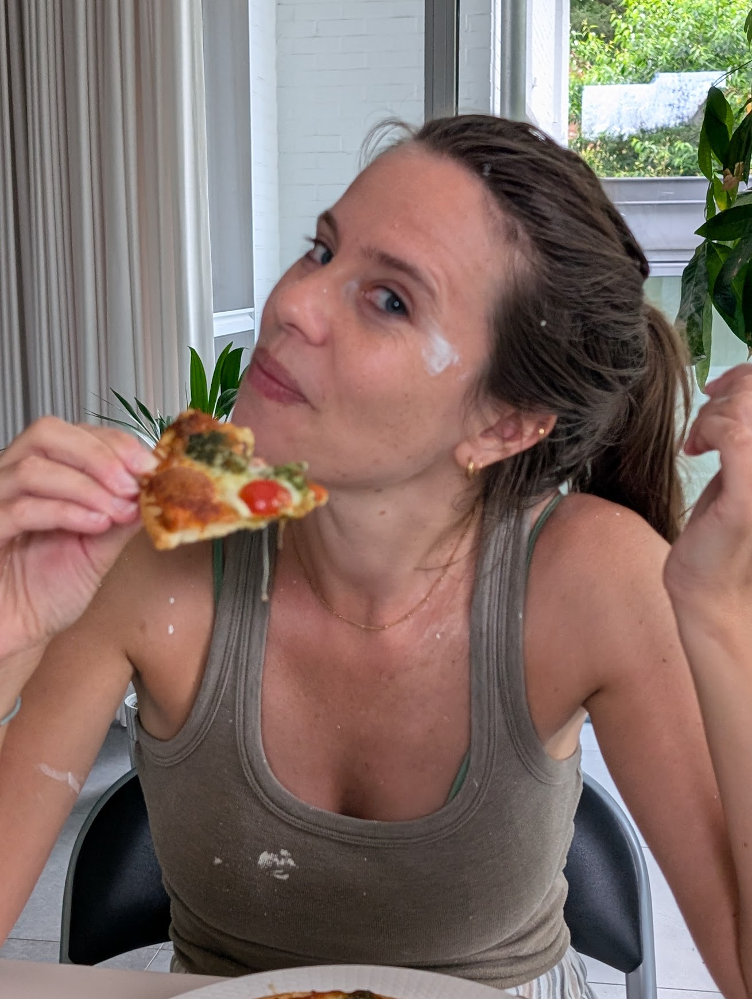

Welkom

Ik ben Noëmie Jacobs, klinisch psycholoog (KULeuven, 2015) en psychoanalytisch psychotherapeut i.o. (KULeuven, 2023 - 2027).
(Jong)volwassenen (18+) kunnen bij mij terecht voor individuele psychoanalytische therapie (zie aanbod voor meer informatie).
Naast mijn zelfstandige activiteit, ben ik sinds 2020 werkzaam als klinisch psycholoog in het volwassenenteam van CGG De Pont Mechelen - Lier - Boom.
Doorheen de jaren heb ik ruime ervaring opgebouwd in het werken met uiteenlopende hulpvragen en klachten. Daarbij heb ik een bijzondere affiniteit ontwikkeld voor hechtings- en relationele moeilijkheden.
Hulpvragen kunnen heel divers zijn. Je kan bij mij terecht wanneer je het gevoel hebt vast te lopen in terugkerende patronen, wanneer relaties moeilijk verlopen of wanneer ervaringen uit het verleden blijven doorwerken in het heden. Ook vragen rond identiteit, zelfbeeld, zingeving, intimiteit, verlies, eenzaamheid, schuld- of schaamtegevoelens, innerlijke conflicten of moeilijk hanteerbare emoties kunnen aan bod komen. Soms is het moeilijk om onder woorden te brengen wat er precies speelt. Ook dan ben je welkom: samen nemen we de tijd om te onderzoeken wat jou bezighoudt en welke betekenis dit voor jou heeft.
Aanbod
Ik bied individuele psychoanalytische therapie aan voor (jong)volwassenen. Daarbij staat een veilige en vertrouwelijke ruimte centraal, waar je op je eigen tempo woorden kunt geven aan wat er binnenin je leeft.
Psychoanalytische therapie vertrekt vanuit de gedachte dat psychische klachten niet los staan van je levensverhaal. Samen onderzoeken we hoe ervaringen, relaties en patronen die zich vaak buiten ons bewustzijn afspelen, kunnen doorwerken in het heden en je dagelijks functioneren beïnvloeden.
In de gesprekken is er ruimte om vrij te spreken over alles wat zich aandient, zonder dat je alles meteen hoeft te begrijpen of op te lossen. We nemen de tijd om stil te staan bij gedachten, gevoelens, dromen, fantasieën, verlangens en terugkerende ervaringen. Zo ontstaat gaandeweg meer inzicht in jezelf, je relaties en de betekenis van jouw klachten. Dat inzicht kan leiden tot meer vrijheid in hoe je met jezelf en anderen omgaat.
Psychoanalytische therapie is een verdiepend proces. Ze richt zich niet alleen op het verminderen van klachten maar vooral op het duurzaam veranderen van de omgang met onze innerlijke wereld en met de buitenwereld. Deze vorm van therapie vraagt dan ook tijd en regelmaat. Wekelijkse sessies bieden de continuïteit die nodig is om terugkerende thema's en patronen te onderzoeken en stap voor stap tot duurzame verandering te komen.
Tijdens de eerste gesprekken nemen we de tijd om samen te verkennen wat je hulpvraag is en wat je verwachtingen van therapie zijn. Het zou kunnen dat ik niet de meest aangewezen persoon ben om je verder te helpen. In dat geval bekijken we samen welke vorm van hulp beter aansluit en verwijs ik je, indien gewenst, door.
Mogelijks heb je al eerder (psychologische) hulpverlening gehad of word je doorverwezen via een huisarts of andere professional. Als je hier verslagen of een doorverwijsbrief van hebt, is het zinvol om deze mee te nemen naar het eerste gesprek.
Praktische informatie
De praktijk is gelegen te Merksplas, met gratis parkeergelegenheid.
Gesprekken worden ingepland op donderdag en vrijdag.
Je kan je aanmelden voor een kennismakingsgesprek via info@praktijknoemiejacobs.be.
De meeste mutualiteiten voorzien een gedeeltelijke terugbetaling van een beperkt aantal sessies. Omdat de voorwaarden per ziekenfonds verschillen, raden we aan om vooraf bij je eigen zorgverzekeraar na te vragen op welke tegemoetkoming je recht hebt.
De kosten voor laattijdige annulaties worden niet door het ziekenfonds vergoed.
De praktijk bevindt zich op:
Werfstraat 2
2330 Merksplas
[ Bereikbaarheid: parkeren, openbaar vervoer, toegankelijkheid ]
Alles wat je deelt, blijft tussen ons. Als klinisch psycholoog ben ik gebonden aan het beroepsgeheim en de deontologische code.
Dringende hulp nodig?
Heb je nood aan een gesprek buiten de openingsuren of tijdens de wachttijd, dan kan je terecht bij onderstaande hulp- en ondersteuningsdiensten.
Bij acute noodsituaties of levensbedreigende crisissen neem je steeds contact op met de hulpdiensten via het noodnummer 112.
Voor dringende medische vragen kan je terecht bij je eigen huisarts of bij de huisarts van wacht.
Via Tele-Onthaal kan je dag en nacht terecht voor een gratis en anoniem gesprek met een vrijwilliger. Bel 106 of maak gebruik van de chatfunctie via www.tele-onthaal.be.
Awel biedt een luisterend oor voor kinderen en jongeren. Je kan elke weekdag tussen 18.00 en 22.00 uur gratis bellen naar het nummer 102. Chatten is ook mogelijk via www.awel.be.
Voor vragen of zorgen rond zelfdoding kan je anoniem en gratis terecht bij de Zelfmoordlijn via 1813. Je kan ook chatten of mailen via www.zelfmoord1813.be.
Voor ondersteuning of advies bij situaties van geweld kan je gratis bellen naar het nummer 1712, elke werkdag tussen 9.00 en 17.00 uur.
Met vragen over alcohol, drugs, medicatie of gokken kan je terecht bij De Druglijn via 078 15 10 20. (Kostprijs: € 0,05 – € 0,025 per minuut)
De Holebifoon is een onthaal- en informatielijn voor vragen rond seksuele oriëntatie en genderidentiteit. Bel 0800 99 533 voor een gratis en vertrouwelijk gesprek.
Contact
Laat gerust iets weten. Ik neem zo snel mogelijk contact met je op, in alle discretie.